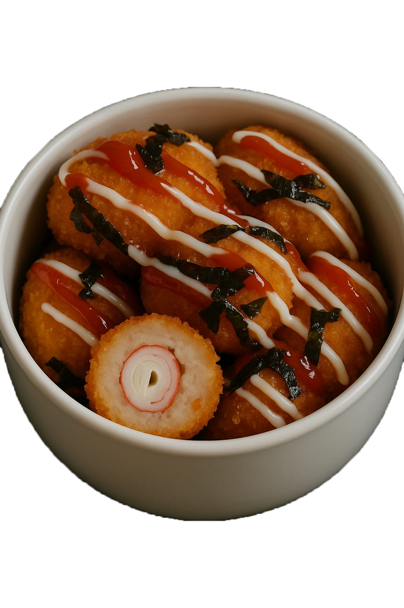

Selamat Datang di Chicken Balls Project!
Kami adalah tim kreatif yang hadir membawa inovasi dalam dunia camilan. Chicken Balls bukan hanya makanan ringan biasa—ini adalah perpaduan antara kelezatan daging ayam pilihan dan bumbu khas yang meresap sampai ke dalam.
Didirikan di Pekanbaru, Riau pada tahun 2025, kami bertujuan menghadirkan camilan berkualitas dengan harga yang tetap bersahabat. Kami percaya, makanan ringan bisa tetap lezat, sehat, dan bikin ketagihan.
Setiap bola ayam dibuat dengan cinta, melalui proses yang higienis dan bahan-bahan segar. Kami berkomitmen memberikan pengalaman kuliner yang menyenangkan bagi pelanggan kami di setiap gigitan.
Terima kasih telah mempercayakan pilihan camilan Anda kepada kami. Mari nikmati kelezatan Chicken Balls yang gurih di luar, juicy di dalam, dan selalu bikin balik lagi!